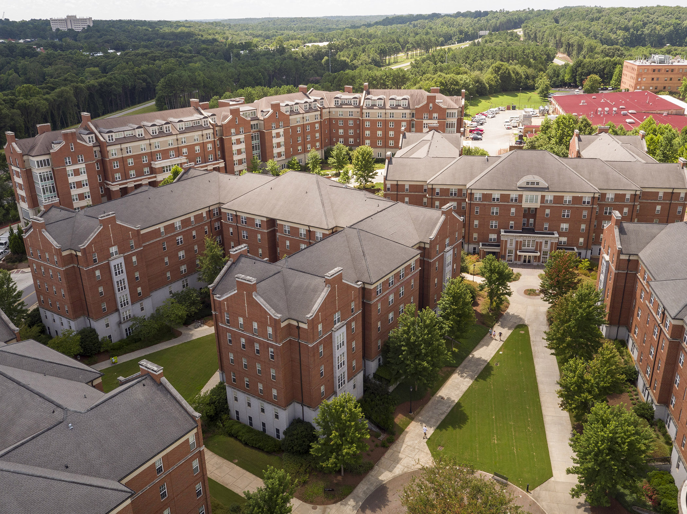

Education
The University of Georgia (UGA) is a public land-grant research university with its main campus in Athens, Georgia. Chartered in 1785, it is one of the oldest public universities in the United States. It is the flagship school of the University System of Georgia. Notable alumni and attendees include current and former members of the United States Senate, members of the United States House of Representatives, federal judges, Rhodes Scholars, Marshall Scholars, MacArthur Fellows (the "Genius Grant") winners, as well as Pulitzer Prize winners, a United States Poet Laureate, Emmy Award winners, Grammy Award winners, and multiple Super Bowl champions.
The university has seventeen schools and colleges. In addition to the colleges and schools, the university is home to the UGA/Medical College of Georgia Medical Partnership that provides education leading to the Doctor of Medicine (M.D.) degree from the University of Georgia as well as extensive facilities for medically related education and research.
Breweries
Since last fall, visitors to Athens have had a new reason to say “Cheers!” at the quintessential college town's collection of craft breweries. Thanks to changes in Georgia's alcohol regulations, breweries (and distilleries across the state, too) can now sell their suds straight from the source — no more being relegated to shopping for craft beers at wholesale distribution sites.
In short, there's never been a better time to embark on some beer tasting — and grab a six-pack to go — in one of the South's edgiest formerly antebellum towns. The Rye Pale Ale has been a favorite since it took home a gold medal at the American Beer Festival in Denver back in 2002. In fact, that single beer was the impetus for the brewmasters to open a brick-and-mortar outfit a few years later in 2008 in Athens's artsy warehouse district.